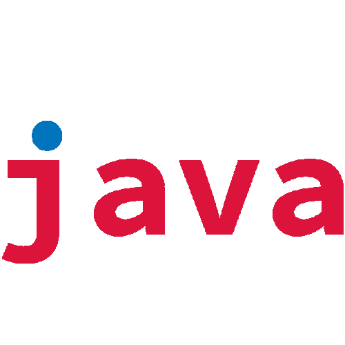

> D4CH4 (frozen)

A cool ass unique story about my homie from a village. I really
hope that I`ll end it oneday..
Need a lot of drawing and animating skills to realize all the stuff [1].
> Kuroi (frozen)
It`s a short game about dark ninja who is going to save his wife. I was
a super zadrot of 8-bit games in Dendy times. And now I can create and play
into my own 8-bit games. That`s dope!
Need a lot of drawing and animating skills to realize all the stuff [2].
> sluTTs
This game is nothing but typing tutor. You`ve got only 5 attempts
to make a mistake. So, what r you waiting for? Go and check it out!
> TOP SECRET (frozen)
TOP SECRET Need more knowledge.
> lordpitt_bot
I`ve gotta friend Vasily from a village, who was my inspiration to
create this bot. I`ve tried to simulate his behaviour as clear as I
can.. and I think I did a great job on it. Anyway, it`s still raw.
> 5aboteditor
A simple text editor based on curses library.
> CRC-32 changer
This program takes a file, calculate its CRC value and change it to
any 32-bit value you want by adding 4 extra bytes to the end of the
file.
> GPU path tracer on OpenCL
This project was my Bachelor`s work. I spare lot of f-ing time on
it and I still don`t know how something works in it because of
crazy maths and physics.. but it works.